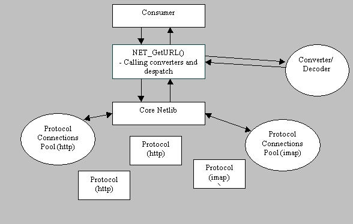

|
|
N2 Kickoff meeting notes.
Here are Suresh Duddi's notes of the kickoff meeting for project N2. N2 aims to clean up Netlib of its old dead code and make things work faster better. As a part of the meeting several key areas were identified that needed attention.
Components of Netlib
-
Converters: decoders, stream converters
-
Core Scheduling, DNS, Socket
-
Cache
-
Protocols
-
Streams
-
URL Maintenance
-
Threading
-
Cookies
Issues from dp's email
-
IURL has too much in it
-
There needs to be a unified stream interface and that should be the primary
channel of communication across converters, protocols, cache.
-
How do converters kick in.
-
what are the components of netlib/ Would cache and converters be part of
it or outside it.
-
Pluggable protocol interfaces.
-
how should the cache plug in.
Rick Potts presentation of modular netlib work ........
-
nsIURL
-
nsNetServices
-
URLConnection
-
Cookie
-
Proxy
-
Interrupt
-
Converters are registered for mimetype conversion without notion of presentation
type or command. Viewers will be registered for commands.
Goals for the N2 effort
-
Remove MODULAR_NETLIB #define
-
Remove url_s
-
Remove MWContext
-
Converters
-
Pull converter/decoder out of core netlib into a separate service.
-
Add a despatch layer on top of core netlib that does converter chaining
and data despatching
-
Streams
-
Unify all streams.
-
Convenience functions for listeners and streams
-
Convenience functions for {MIMEType, viewer/Command} -> OutputStream
-
All streams have a base interface nsIInterface
-
Input and output streams dont have to match. Maybe they have to. Deal with
it later.
-
Output stream will be passed into a converter
-
How headers are stored and where ?
-
How to handle Multi-part ? need to look. Check on how headers are
handled.
-
Protocols
-
Protocol Manager: For creating managing multiple protocols
-
Existence of Protocol Manager opaque to protocols. Protocol Manager is
a netlib core internal.
-
Set of interfaces needs to be exposed to 3rd party protocol developers.
Expose interfaces to sockets and netlib core.
-
Connection Manager for instanstiation of a protocol. You ask Protocol Manager
for a connection manager.
-
Implement nsITransport and nsISocketTransport for communication betn protocols
and core netlib.
-
How do we pass back bytes read and max bytes. Progress ?
Architecture diagram of Netlib

|